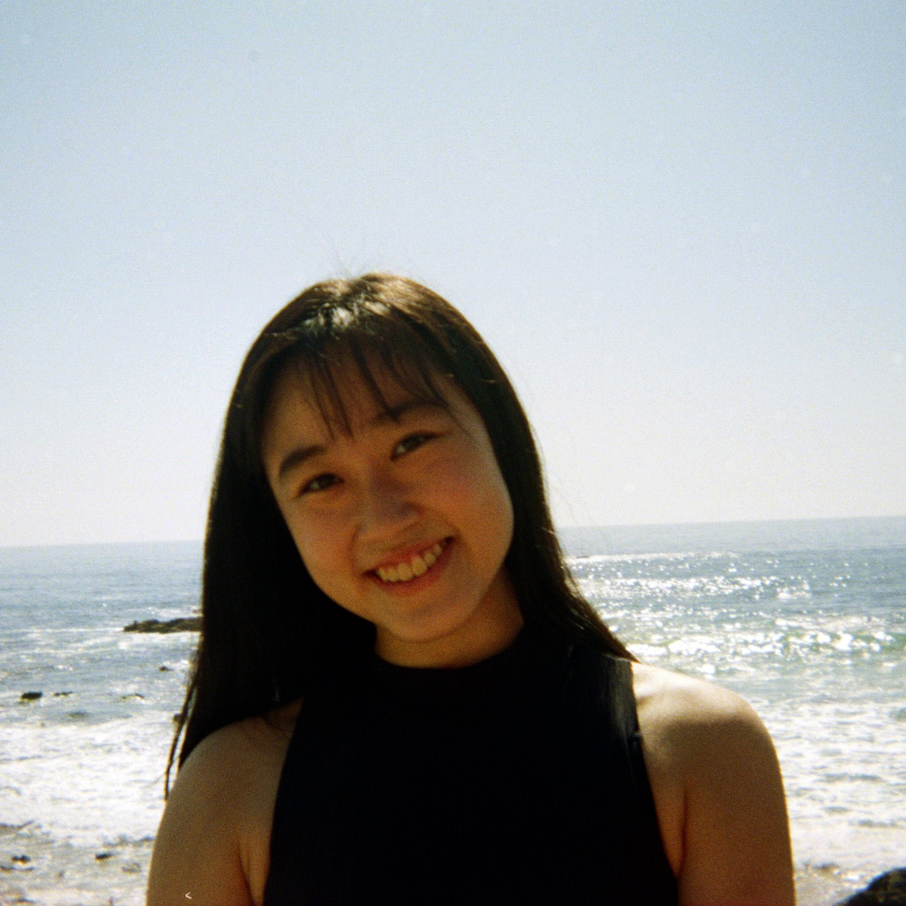
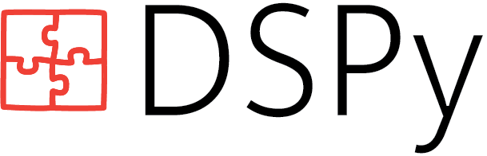
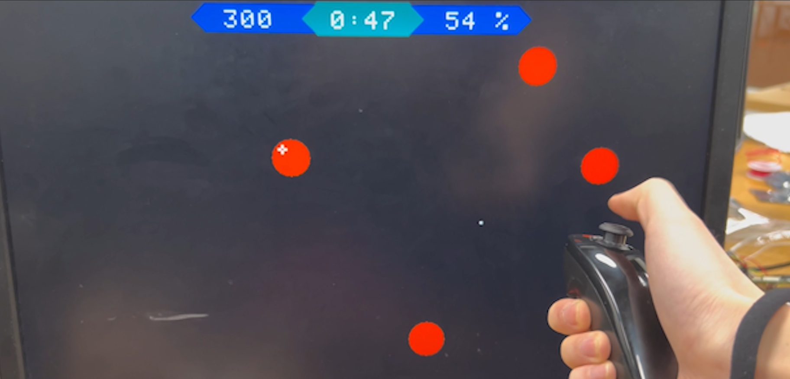
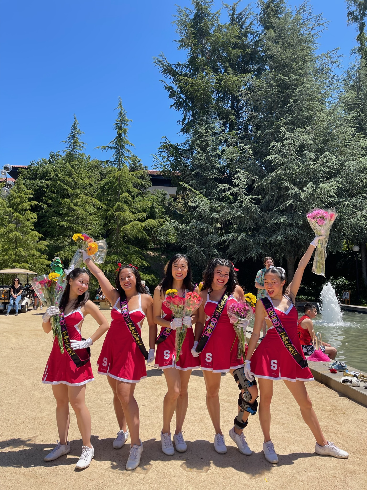

Hi, I'm Chuyi.
It's good to see you here.

About
My name is Chuyi Zhang and I'm a
rising junior at Stanford University
studying computer science and biology. I never thought I would be
studying anything engineering-related coming into college, but here I
am! I'm not exactly sure what I want to be doing post-undergrad, so I've
been using these few years to explore my many options, including
software engineering, research, and teaching.
What I have learned about myself from these experiences is that I like
the balance of working independently and in team environments. I
also realize I like the aspects of being creative and
getting to know my team members outside of work. In my free time,
I spend a lot of time dancing on campus and eating good food around the
area.
 Me with a few members of Stanford Alliance Dance.
Me with a few members of Stanford Alliance Dance.
I'll be one of the social chairs for next year!
Experience
Since spring of 2023, I've been working as a
research assistant with Stanford Future Data Systems (founders of
Demonstrate-Search-Predict, an NLP framemwork taught and used in Stanford's NLP classes).
I recently
published
a Colab notebook on the lab's
Github page
allowing researchers to use the lab's ColBERT package on their
own data. This notebook has been high in demand, and I'm currently
working on making enhancements to the notebook as the ColBERT package is
being further developed. I have also helped the lab with their name
rebranding using by
designing
their new logo with Adobe Illustrator. They're pretty cool people, and
I'm looking forward to continue working with them!

A simple Pytorch-inspired logo I drew for DSP.
In spring 2023, I was also selected to be a section leader for
Stanford's introductory computer science courses. I've led 50-minute
discussions for about 20 students to help them practice the basics of
C++ and Python. I find it very rewarding knowing I'm helping someone
learn how to code for the first time.
This past summer, I've been a software engineering intern at
PlaygroundRL, a startup that combines a gaming website with opportunities to gather
research data. I've helped to build the website from the ground up as a
full-stack developer, solving bugs and implementing new features.
This internship made me very excited about web development and
actually motivated me to build this website.
Projects
One of my first projects was building a
retro-edition of Aim Labs, a final team assignment for CS107E, the first systems class I took at
school. It is a spinoff of the popular aim training game Aim Labs on
Steam. I liked this project because it required us to take all the
skills we had learned throughout the quarter and apply it in a creative
manner, and the final result truly felt like a team effort. This class
as a whle made me
realize the value in working within a group of diverse talents,
shaping the positive way in which I now view
collaborating with others.

Me playing my team's Aim Labs game. It's controlled by a Wii remote!
Last year, I was one of five
Stanford Dollies, a group of dancers who performed at Stanford's NCAA, Pac-12, and home
games. I'm currently working on
implementing a modernized website
for the legacy which dates back to the 1940s! This website will allow
past Dollies to look back on old memories and new Dollies to learn about
their lineage.

Me with the other 22-23 Dollies!
I have other small projects sprinkled here and there through which I've
learned simple machine-learning and app development. They can be found
in my Github page!
Skills
I have a solid background in Python, C++/C, React, HTML5/CSS,
Javascript, GraphQL, and SQL.
In terms of software, I'm comfortable with Github, Linux/Unix, Jupyter
notebooks, and the Microsoft Office.
I also enjoy learning new languages and would consider myself a
quick-learner. I am comfortable working in fast-paced and
collaborative settings and adapt well to the needs of a team.
I made this site from scratch with HTML5/CSS! The
code
for this is on my Github page.